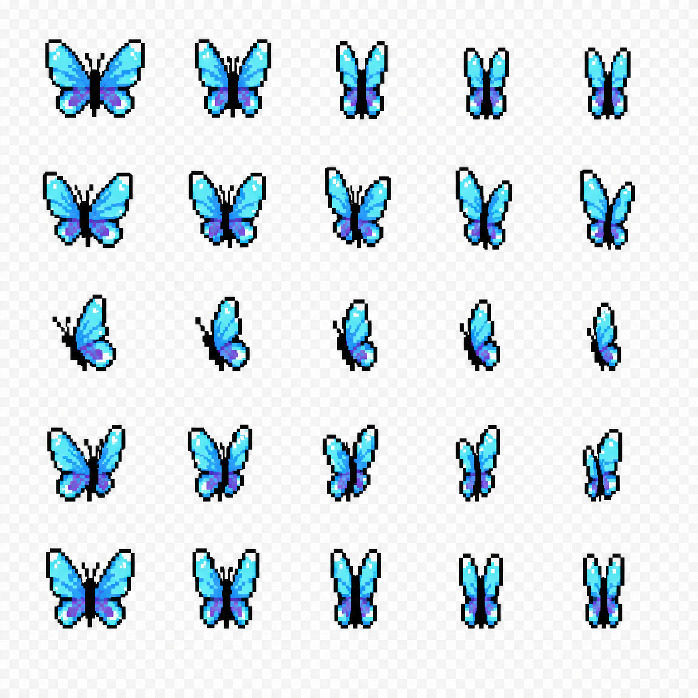
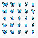
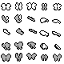

路线 A：真实内置 image_gen 生成 + 一次针对性编辑。以下播放全部裁自实际生成 PNG，没有程序绘制替身、重新描画或人工补帧。
1254×1254 · RGB · 105,227 色
底色为粉色。如果背景真的透明，粉色应该透出来；这里看到的白灰格是原图的一部分。
1254×1254 · RGB · 103,029 色
强化了真实 alpha、相位同步和固定锚点要求，结果仍未通过。不是透明素材成品。
正在载入原始 PNG…
| 验收项 | 实测 | 意味着什么 |
|---|---|---|
| 5×5 图案数量 | 25 只，视觉数量正确 | 数量正确，不代表角度/相位正确 |
| 真正透明 | 两版透明像素均为 0 | 无法作为正常透明 billboard 使用 |
| 整数等分网格 | 1254 ÷ 5 = 250.8 | 这里只做固定比例切格，不做逐帧纠偏 |
| 锚点与尺度 | 可见漂移、缩窄和纹样变化 | 不应把面积变化都当作合法拍翅 |
| 周期与跨角度相位 | 同列相位不可验证；末→首明显跳变 | 尤其侧面像收拢/缩小，缺少可信回程 |
| 项目像素/调色板 | 原图不是 80×80 索引图 | 项目要求透明 + 4 个不透明灰阶索引，运行时着色 |
左：未经修改的 v2 大图。右：同一图最近邻压成 80×80 后放大。未抠图、未重定位、未调色板规整，棋盘背景保留作为失败证据。


项目原有 80×80 灰阶索引源（只读复制）：

使用内置 image_gen，不需要 API key，没有外部付费服务。v2 是在 v1 和项目真实两张图参考下生成的针对性编辑。原始输出、提示词及散列均保留。
完整 v2 提示词 · v1 提示词与来源 · 机器验收 JSON · 复现测量/降采样 · 验收说明
v2 SHA-256：9e54a32439218f6a4ec75a7c0d63153f4f5b4c8136d4a823dae7a39d82f99eac
结论仅适用于本次“首次生成 + 一次编辑”的实测，不证明所有未来直接生图都不可行。它说明：本轮无法靠提示词同时锁住真实透明、几何身份、固定锚点和跨视角时间相位。可用作外观概念参考，不能宣称可直接替换生产资产。